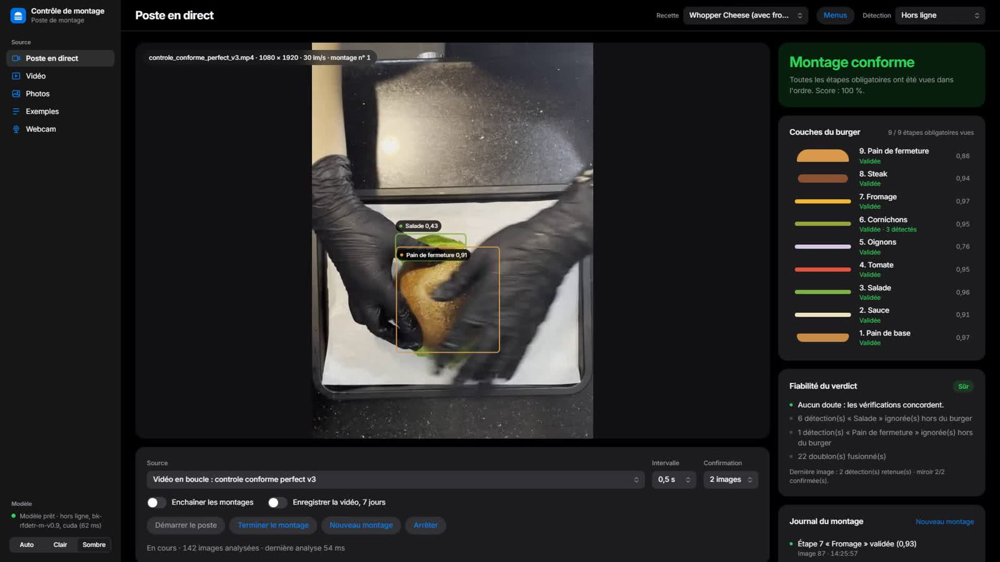
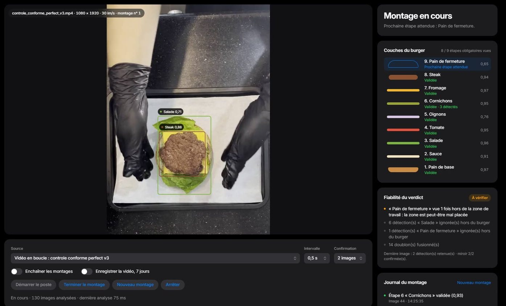
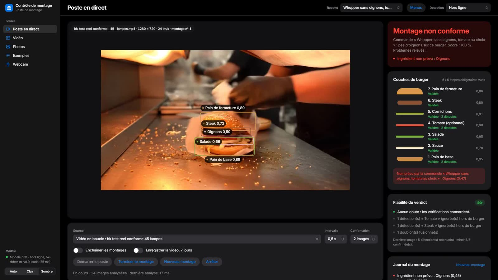
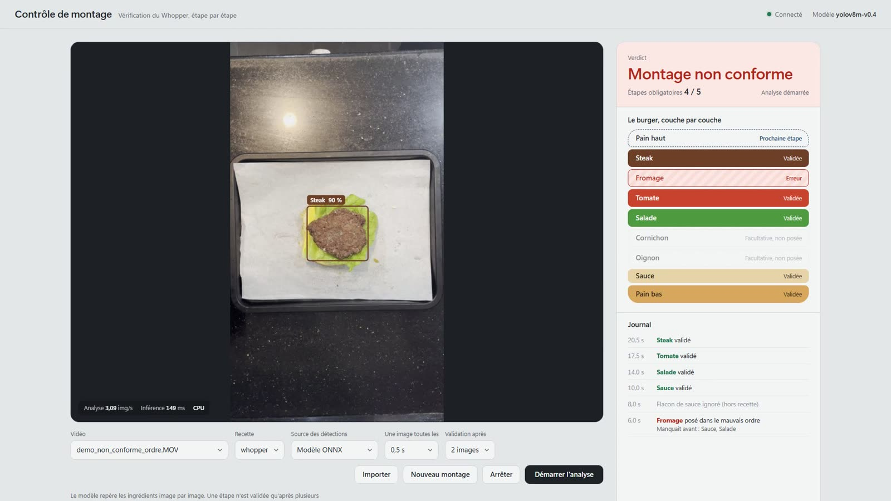
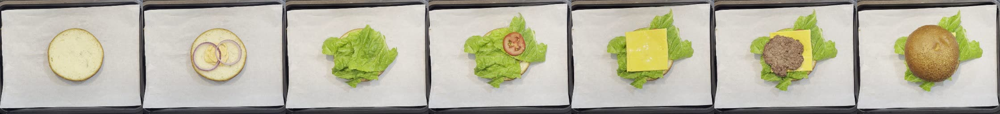
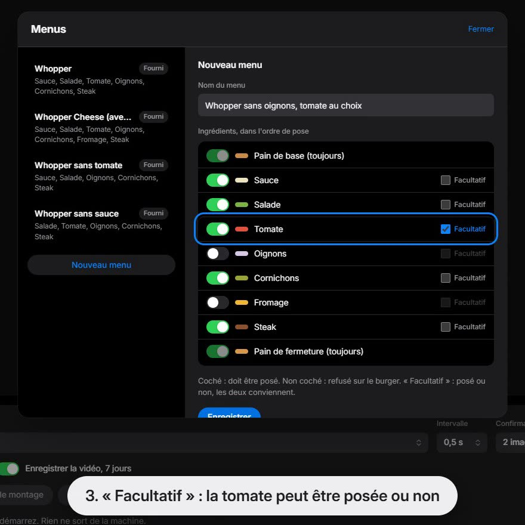

Computer vision · freelance · real-time and fully offline · v0.9 shipped
BurgerVision
A fixed camera watches a burger assembly station. The system detects each ingredient, confirms it over time and checks it against the order, giving a live “conforme” or “non conforme” verdict with the reason. When it is unsure, it flags instead of approving.
The problem
Catch the wrong layer, live, without internet
Constraints
- Runs on the station’s own machine, offline.
- Safety rule: a false “conforme” must never happen; when unsure, flag.
- A model trained on one station must generalise to the client’s kitchens and camera angles.
The principle
AI detects, temporal logic confirms, the recipe decides. An ingredient counts only after it is seen on several frames, an image-quality gate blocks blown-out, dark or blurred frames, and recipes are YAML data, so every verdict is deterministic and replayable.

How it works
Detector, timeline, recipe
RF-DETR-Medium at 576 px, exported to ONNX, for nine classes from bottom bun to top bun. YOLOv8m and D-FINE were trained and compared along the way.
v0.6 analyses only the station work area, giving about three times more pixels per ingredient.
Home station, annotated client frames and two public sets; two whole kitchens held out for an unseen-kitchen test; 79 label fixes reviewed on crop sheets.
Required, refused and layer order per menu item in YAML, with a menus editor in the interface.
REST + WebSocket on ONNX Runtime (CPU, CoreML or CUDA) and a FastAPI dashboard in French, with USB, IP, RTSP, video or photo input.
Benchmarks, cross-domain evaluation, stress tests, a golden video, a live training monitor and CI on GitHub Actions; 227 tests in the interface.
Results
v0.9, on footage it never trained on
| Test | Result |
|---|---|
| Own station (126 check images, work area) | mAP50 0.889 (v0.5.1: 0.840) |
| Client kitchens (111 images, 14 videos, 4 angles) | mAP50 0.77, up from 0.45 in v0.6; worst angle 0.745 |
| Verdict bench, held-out client videos | 26/28 right, 0 missed errors, 0 wrong “sure” verdicts (client’s own model: 21/28) |
| Home checks | 4/4 videos, golden video passed, 0 false “conforme” |
| CPU p50 latency (v0.5.1) | RF-DETR-M 183–199 ms, YOLOv8m 147–156 ms |
Hard cases remain: white onion is found 57% of the time and dark-green lettuce 38% under stress tests, and sauce under bright light is weak. The client’s own production model is still slightly ahead on its home footage (0.80 vs 0.77).
Gallery
The station, step by step

Top-down station
Failure verdict
Wrong order caught
Assembly order
Recipe editor